Speculative modeling exercise only. No clinical, medical, engineering, flight or operational claims.
Page-image view of the PDF. The connected GitHub interface stores text only, so the PDF binary stays on the project computer. Markdown source: ../../Magnetic_Launch_GoalSeek_Continuation.md.
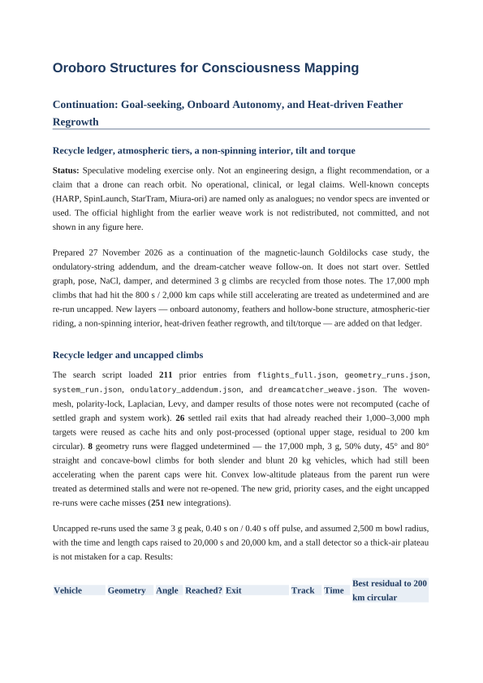
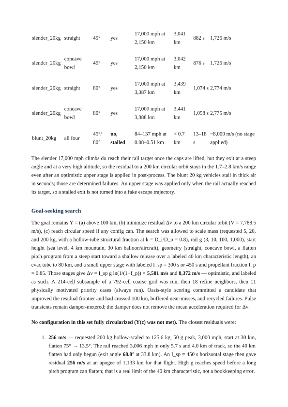
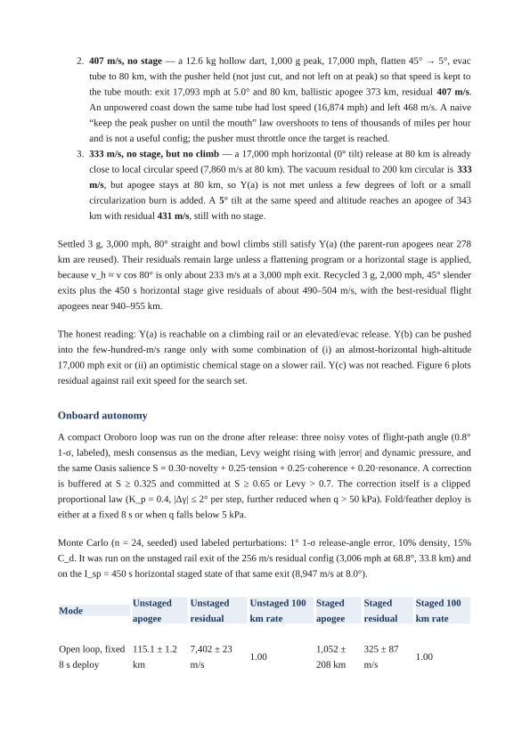
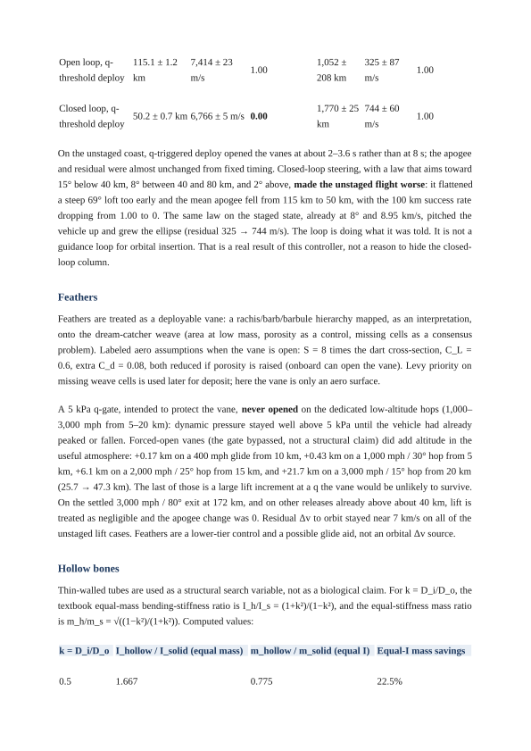
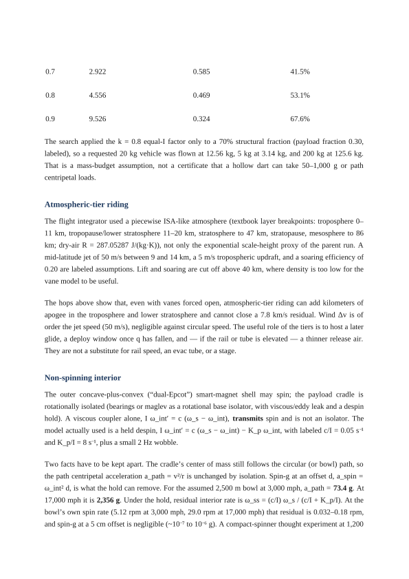
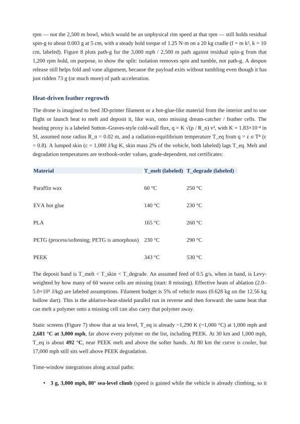
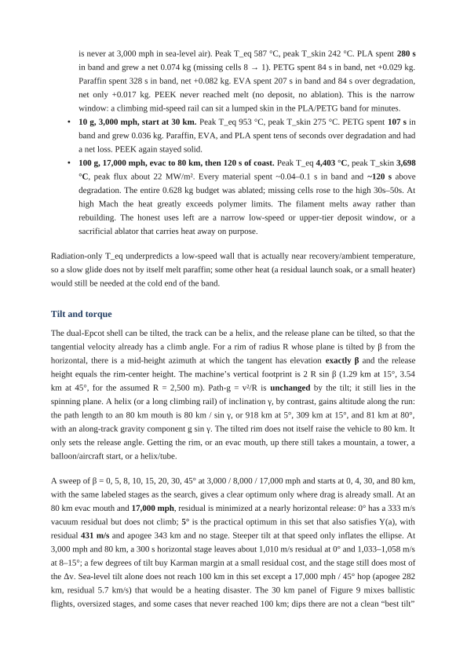
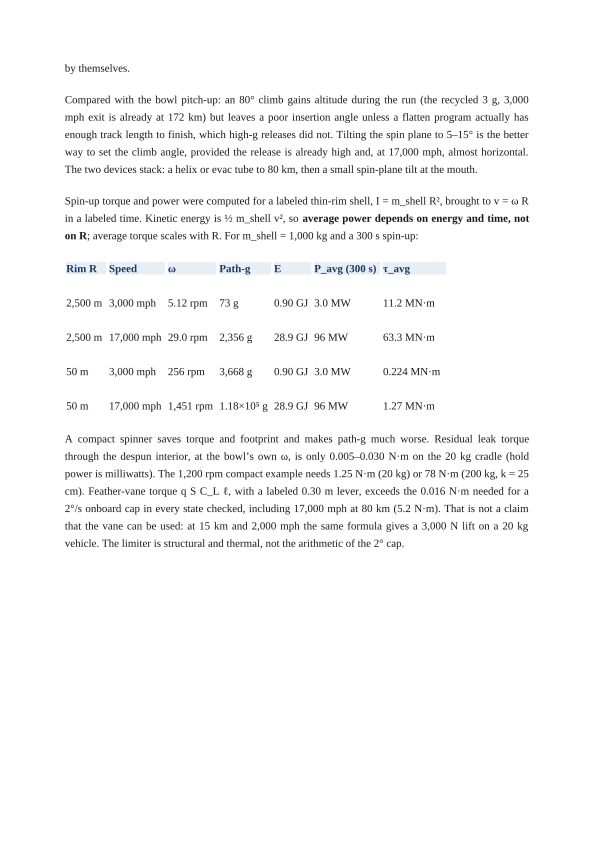
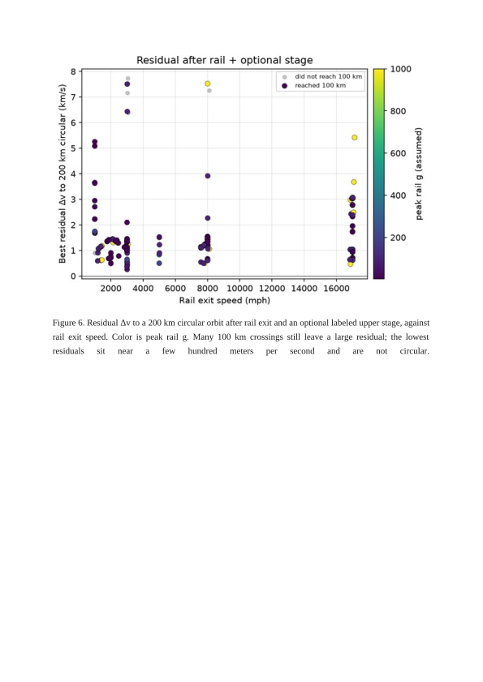
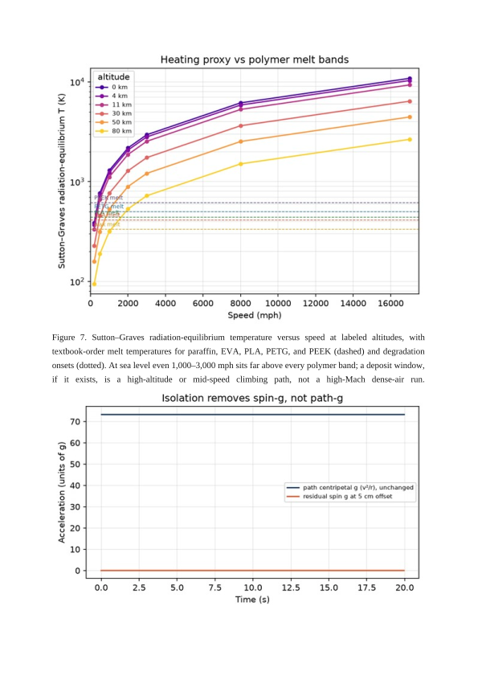
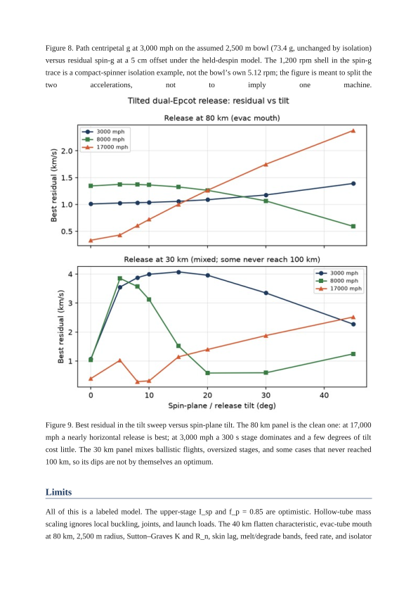
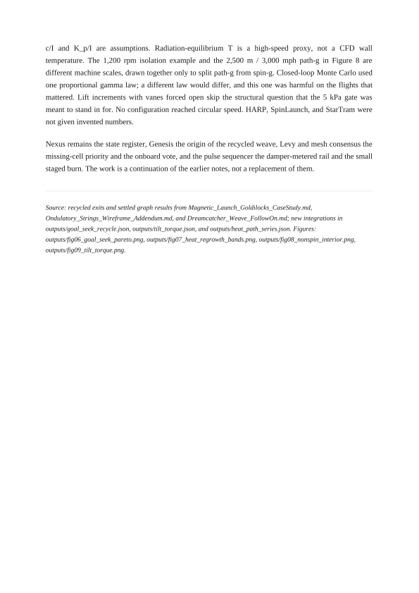